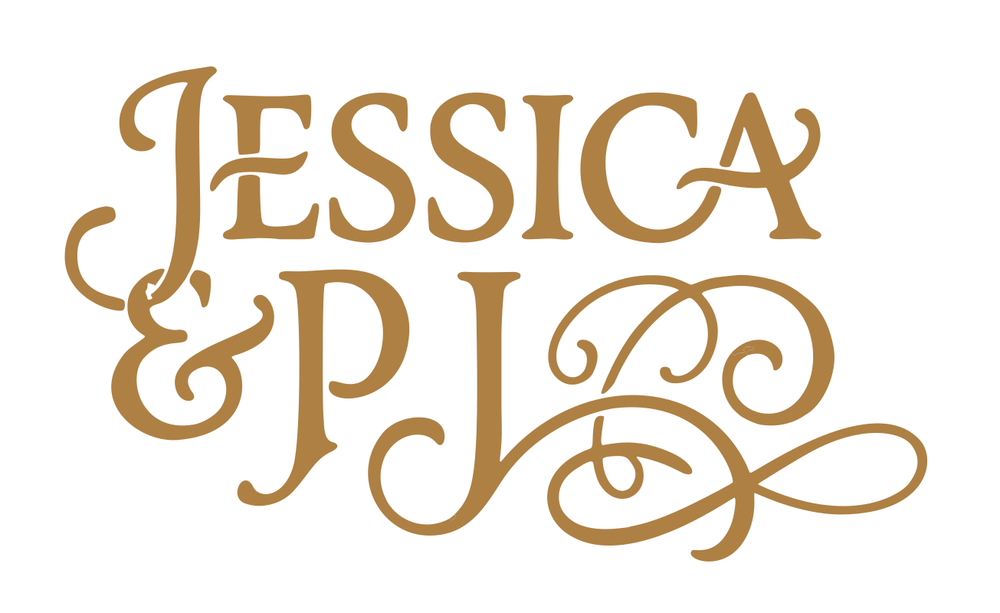

Custom name treatment
A Story Woven Into Every Detail
When Jessica and PJ reached out, they knew they wanted their wedding stationery to tell their story — and a big part of that story is family heritage. A tartan became the thread that tied the design together.

Finding the Right Colors
We started by pulling colors directly from PJ's family tartan — the deep navy, warm gold, and crisp white that run through the pattern. These colors became our foundation. Rather than fight against them or tone them down, we let them lead the design: bold, confident, and unmistakably tied to who PJ is.
From there, we added layers of meaning: Celtic love knots to represent their bond, classical Greek key patterns to bring in timeless elegance, and modern touches like a scannable QR code that bridges tradition and the digital world their guests live in.
The Save-the-Date

Front
Elegant script paired with tartan ribbon flags and a Celtic love knot. Every detail points back to who they are.
The Creative Process
We explored several directions with Jessica and PJ before landing on this one. Some options pushed the tartan further to the foreground; others tried to hide it. But the strongest solution was the simplest: let the tartan breathe, use it as an accent and ribbon detail, and pair it with thoughtful typography and classic motifs that felt personal to them.
The Celtic love knot appears as a central accent on the card — subtle enough to feel sophisticated but present enough to feel intentional. The Greek key pattern at the bottom brings balance and a sense of timelessness. The QR code is functional but designed to feel like part of the suite, not an afterthought — a modern bridge to their wedding website.

Every piece tells a story
Jessica and PJ's stationery isn't just pretty — it's a reflection of who they are, together. That's what custom design means to us.
Let's Tell Your Story